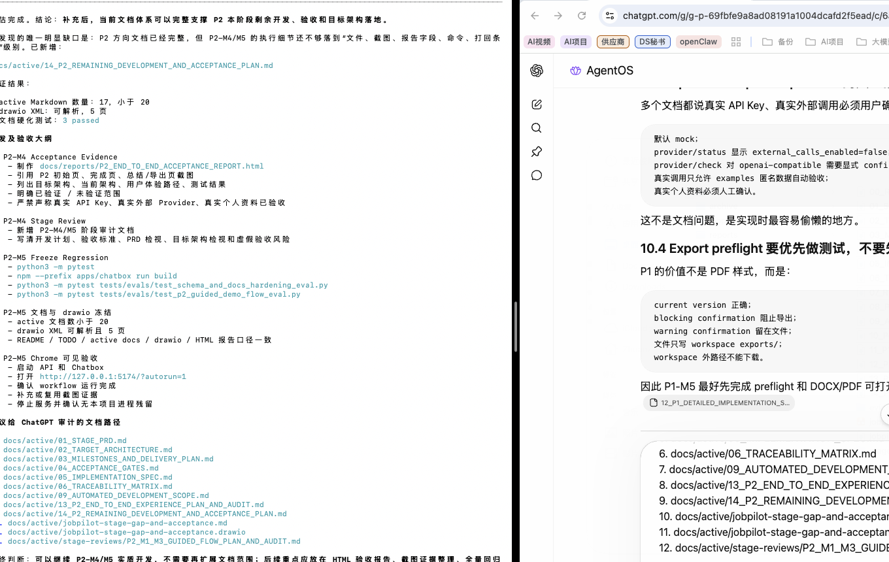
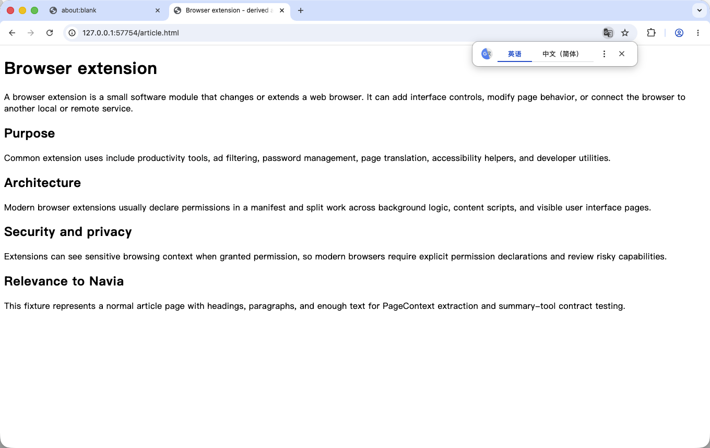

1. 打开 Side Panel 前
浏览器显示真实 fixture 页面，尚未打开右侧 Navia。用于对照打开前后的窗口形态。

本报告按新标准重新执行验收：只有真实网页与右侧 Chrome 原生 Side Panel 同屏出现，才承认侧边插件状态。最新复测没有稳定打开原生侧栏，因此当前结论是“原生侧栏打开不稳定 / 最新复测未通过，完整侧栏内用户流程未通过”。
最新复测截图未出现右侧 Navia 原生侧栏。
后续坐标自动化截图不可靠，未形成合格证据。
不再作为侧边栏 UX 通过证据。
曾有一次系统级 Option+Shift+N 触发后出现真实网页与右侧 Navia 原生侧栏同屏截图，但最新复测未能稳定复现。按严格验收口径，不能声明“原生侧栏打开通过”。
读取页面、Debug、提交上下文、总结、问答、Mindmap 的完整侧栏内流程没有形成可信截图证据。尝试用坐标自动化继续操作时，曾截到终端和无关窗口；这批截图已删除，不能作为验收材料。
| 验收项 | 方式 / 命令 | 结果 | 判定 |
|---|---|---|---|
| 打开原生 Side Panel | node apps/chrome-extension/e2e/chrome-native-sidepanel-probe.mjs |
系统级 Option+Shift+N 可触发 Runtime 访问，但最新截图没有出现右侧 Navia Side Panel。 | 未通过 |
直接调用 chrome.sidePanel.open() |
service worker evaluate | 失败：sidePanel.open() 只能响应 user gesture。 |
预期限制 |
| direct extension page 功能链路 | pnpm --dir apps/chrome-extension e2e:chrome:visual |
摘要、问答、Mindmap 功能链路曾通过，但运行在全屏扩展页。 | 仅冒烟 |
| 原生侧栏内完整流程 | 曾尝试坐标自动化，未纳入正式验收脚本 | 继续点击读取、Debug、提交、摘要等步骤时截图区域不稳定，误截无关窗口；相关截图和脚本已删除。 | 未通过 |
浏览器显示真实 fixture 页面，尚未打开右侧 Navia。用于对照打开前后的窗口形态。

不合格证据：最新复测截图只显示真实网页和 Chrome 翻译弹窗，没有出现右侧 Navia Side Panel。因此不能作为侧边栏通过证据。

visual-chrome-cli 中的摘要、问答、Mindmap 截图只能证明功能链路冒烟，不能证明真实侧边栏 UX。
native-sidepanel-ux 尝试中误截终端和无关窗口，已删除，不作为任何验收依据。